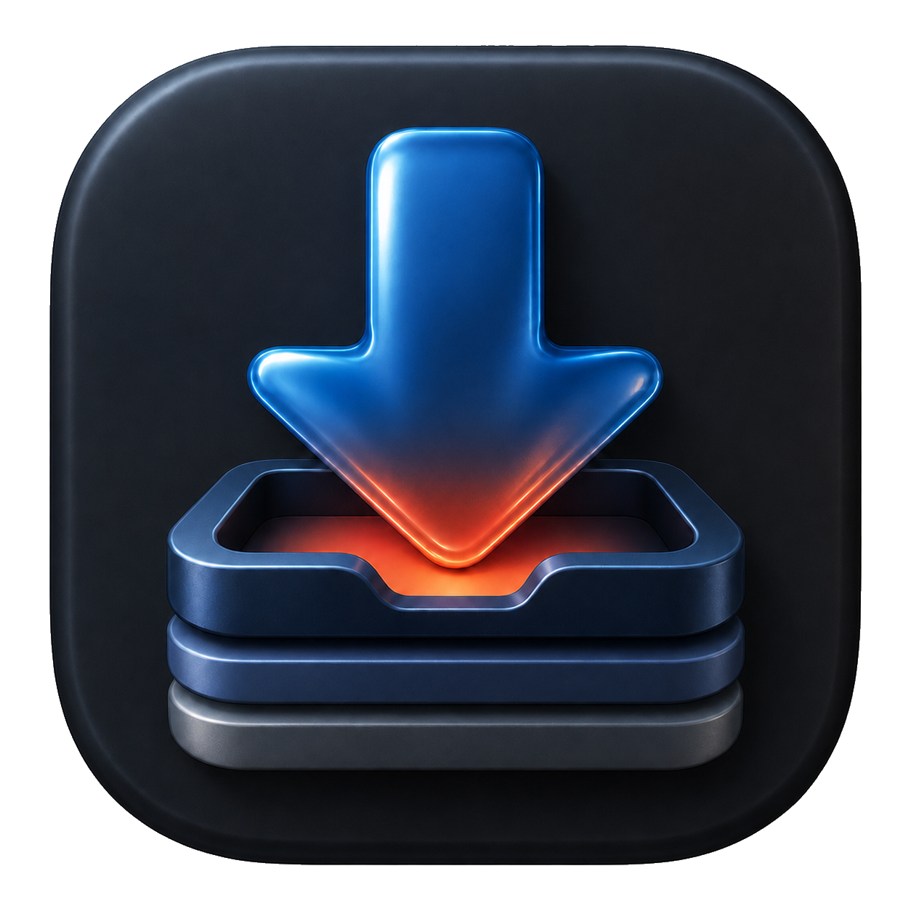

Downloads you can manage
Run several jobs at once, pause or retry them, and keep progress, speed and ETA visible.

PullrNative macOS download queue
Pullr turns yt-dlp into a focused Mac app: collect links, choose an export preset, and let a real download queue handle the rest.
macOS 14+ · Apple silicon and Intel · yt-dlp, ffmpeg and Deno
Run several jobs at once, pause or retry them, and keep progress, speed and ETA visible.
Send supported pages and captured streams to Pullr without rebuilding a command by hand.
Choose video or audio output, match YouTube tracks in Apple Music, and keep custom presets close.
Local-first by construction
Pullr has no accounts, analytics or tracking server. Optional website and YouTube hours tracking is off by default and stores its history locally.